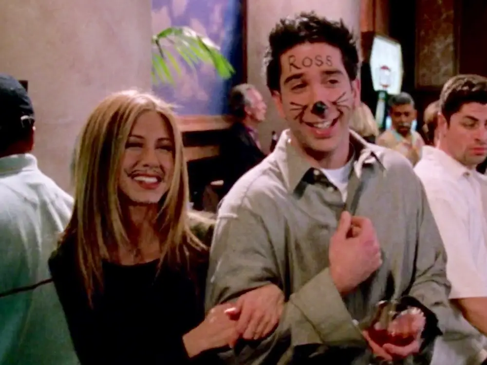

Ross
Full Name
- Ross Geller
Day of Birth
- October 18, 1967
Gender
- Male
Spouses
- Carol Willick (1989 - 1994)
- Emily Waltham (1998 - 1999)
- Rachel Green (1999 - 1999)
Main Job
- Paleontologist
Portrayed by
- David Schwimmer
The sensitive intellectual
Dr. Ross Geller, portrayed by David Schwimmer, is the intellectual and sensitive member of the group who often finds himself caught
between his love for paleontology and his pursuit of romantic relationships. Ross's endearing quirks, awkward charm, and dry sense
of humor make him a beloved character among fans of the show.
As a paleontologist, Ross's passion for dinosaurs and prehistoric creatures is evident in his encyclopedic knowledge and childlike
enthusiasm for his field of study. His dedication to science and his pursuit of knowledge add a layer of intellectual depth to his
character, showcasing his love for the natural world and his desire to unravel the mysteries of the past.
Ross's romantic journey throughout the series is marked by both triumphs and heartbreaks. From his on-again, off-again
relationship with Rachel to his failed marriages, Ross experiences the highs and lows of love. His longing for a deep connection
and his sometimes clumsy attempts at romance provide moments of both comedy and poignant reflection.
Beyond his love life, Ross's role as a brother and a father adds layers of complexity to his character. His protective instincts and
unwavering loyalty towards his sister Monica and his daughter Emma highlight his sense of family and the importance he places on their
well-being. Ross's journey as a father involves navigating the challenges of co-parenting and finding a balance between his responsibilities
and his personal growth.
Ross's growth as an individual is evident in his journey of self-discovery and personal development. From his insecurities and bouts of
jealousy to his eventual maturation and self-acceptance, Ross learns valuable life lessons about love, friendship, and the importance of
embracing change. His vulnerable moments and emotional depth make him a relatable and sympathetic character.

Ross's journey is intricately intertwined with his relationship with his friends, as he navigates the ups and downs of their dynamic.
His role as the group's voice of reason and intellectual anchor often leads him to provide guidance and support to his friends
during their own personal crises. Ross's ability to offer insightful advice and lend a listening ear showcases his empathetic nature
and his commitment to maintaining the bond they share.
Throughout the series, Ross's passion for knowledge and academia is met with both triumphs and setbacks. From his career milestones to
the challenges he faces in his professional life, Ross's determination and resilience shine through. His unwavering commitment to his work,
despite the obstacles, inspires others to pursue their own passions and never give up on their dreams.
Ross's comedic moments, often stemming from his awkwardness and his knack for finding himself in peculiar situations, add levity and
laughter to the show. From his iconic "pivot" scene to his infamous tan mishap, Ross's misadventures inject humor into the storyline,
showcasing his ability to embrace the lighter side of life and find humor in the face of adversity.
In summary, Ross Geller embodies intellect, sensitivity, and personal growth. His journey of love, friendship, and self-discovery adds
depth and complexity to the show. Ross's passion for his work, his loyalty to his friends and family, and his ability to find humor in the most
unexpected moments make him a relatable and endearing character. Through his triumphs and trials, Ross reminds viewers of the importance of
perseverance, the power of friendship, and the enduring quest for happiness.